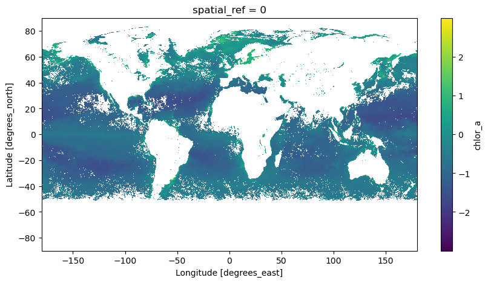
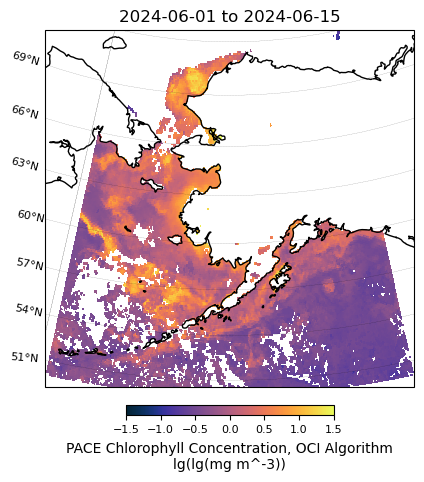
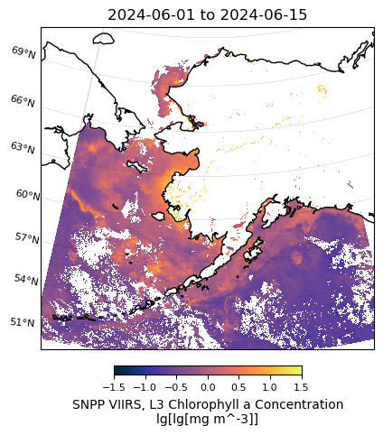
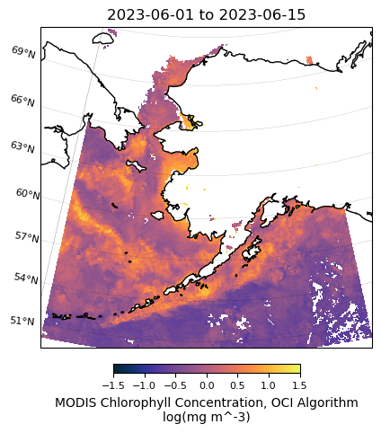
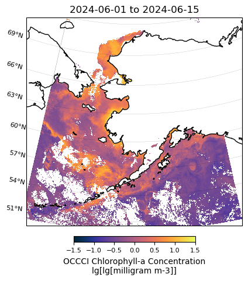
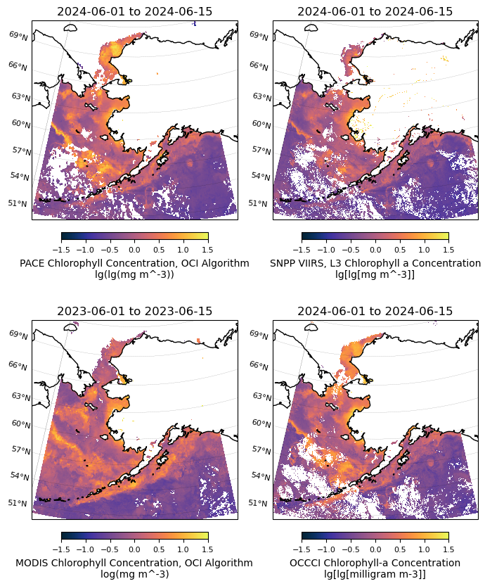

Download Chl-a products of multiple sources and make regional plots#
Author: Jiaxu Zhang (UW, NOAA, jiaxu.zhang@noaa.gov)
This tutorial demonstrates how to download chlorophyll-a concentration products from various satellites and create regional plots at publication quality.
Contents#
We begin by importing the packages used in this notebook.
%matplotlib inline
import numpy as np
import matplotlib.pyplot as plt
import cartopy.crs as ccrs
import xarray as xr
import earthaccess
import requests
import sys
sys.path.append("../scripts")
import PACEToolkit.regional_plot as regional_plot
1. Download and Process PACE OCI Data#
This tutorial demonstrates how to use the earthaccess package to create PACE OCI Chl-a plots without downloading a local copy. In this tutorial, we will use the hypercoast package to achieve the same goal.
You may need to install hypercoast in your environment (uncomment the following line).
# %pip install "hypercoast[extra]"
import hypercoast
# hypercoast.nasa_earth_login()
# Temporal range
temporal = ("2024-06-01", "2024-06-15")
# results= hypercoast.search_pace_chla(temporal=temporal,
# bbox = bbox)
# hypercoast.download_nasa_data(results, "../data/pace_chla")
files = "../data/pace_chla/*nc"
array = hypercoast.read_pace_chla(files)
array
<xarray.DataArray 'chlor_a' (lat: 1800, lon: 3600, date: 15)> Size: 389MB
dask.array<transpose, shape=(1800, 3600, 15), dtype=float32, chunksize=(512, 1024, 1), chunktype=numpy.ndarray>
Coordinates:
* lat (lat) float32 7kB 89.95 89.85 89.75 ... -89.75 -89.85 -89.95
* lon (lon) float32 14kB -179.9 -179.9 -179.8 ... 179.8 179.9 180.0
* date (date) <U10 600B '2024-06-01' '2024-06-02' ... '2024-06-15'
spatial_ref int64 8B 0
Attributes:
long_name: Chlorophyll Concentration, OCI Algorithm
units: lg(mg m^-3)
standard_name: mass_concentration_of_chlorophyll_in_sea_water
valid_min: 0.001
valid_max: 100.0
reference: Hu, C., Lee Z., and Franz, B.A. (2012). Chlorophyll-a alg...
display_scale: log
display_min: 0.01
display_max: 20.0
date: ['2024-06-01', '2024-06-02', '2024-06-03', '2024-06-04', ...hypercoast has a plot function viz_pace_chla to easily take a quick view of the mean value of the period.
hypercoast.viz_pace_chla(array, cmap="viridis", size=5)
<matplotlib.collections.QuadMesh at 0x7f55d66cca90>

Custermize the dataset and subset it for plotting. First we calculate the mean of the 15-day data.
array_mean = array.mean('date')
array_mean.attrs.update(
{
"long_name": f'PACE {array.attrs["long_name"]}',
"units": f'lg({array.attrs["units"]})',
}
)
Define the boundary of the area and perform the reduction. Note that the latitude values descend in the index, so the slice will flip the values lat_bnds = [max_lat, min_lat].
min_lon = -179 # lower left longitude
min_lat = 50 # lower left latitude
max_lon = -140 # upper right longitude
max_lat = 72 # upper right latitude
lon_bnds = [min_lon, max_lon]
lat_bnds = [max_lat, min_lat]
array_mean_clip = array_mean.sel(lat=slice(*lat_bnds), lon=slice(*lon_bnds))
array_mean_clip
<xarray.DataArray 'chlor_a' (lat: 220, lon: 390)> Size: 343kB
dask.array<getitem, shape=(220, 390), dtype=float32, chunksize=(220, 390), chunktype=numpy.ndarray>
Coordinates:
* lat (lat) float32 880B 71.95 71.85 71.75 ... 50.25 50.15 50.05
* lon (lon) float32 2kB -178.9 -178.9 -178.8 ... -140.2 -140.1 -140.1
spatial_ref int64 8B 0
Attributes:
long_name: PACE Chlorophyll Concentration, OCI Algorithm
units: lg(lg(mg m^-3))# Plot PACE data
m = regional_plot.plot_regional_map(array_mean_clip, min_lon, max_lon, min_lat, max_lat,
title='{} to {}'.format(temporal[0],temporal[1]),
vmin=-1.5, vmax=1.5, size=(5,5))

2. Download and process SNPP VIIRS data#
There are many different ways to obtain L3 data (e.g., from https://oceancolor.gsfc.nasa.gov/l3/)
Here we show how to get data from NOAA’s ERDDAP server (https://oceanwatch.pifsc.noaa.gov/erddap/index.html). ERDDAP is both a data server and a web application developed by NOAA’s Environmental Research Division. It provides a user-friendly web interface for searching, accessing, and visualizing data.
### Uncomment the following lines if you need to download the data for the first time
# import urllib.request
# url = 'https://oceanwatch.pifsc.noaa.gov/erddap/griddap/noaa_snpp_chla_daily.nc?chlor_a%5B(2024-06-01T12:00:00Z):1:(2024-06-15T12:00:00Z)%5D%5B(0.0):1:(0.0)%5D%5B(77.00625):1:(50.006249999999994)%5D%5B(180.01875):1:(221.98125000000002)%5D'
# urllib.request.urlretrieve(url, "../data/viirs.nc")
viirs_ds = xr.open_dataset('../data/viirs.nc')
Since the dataset is already subsetted for the area of interest, the next step is to compute the 15-day mean and create plots.
viirs_chla = np.log10(viirs_ds['chlor_a'])
# Calculate the temporal mean
viirs_chla_mean = viirs_chla.mean('time')
viirs_chla_mean.attrs.update(
{
"long_name": "SNPP VIIRS, L3 Chlorophyll a Concentration",
"units": 'lg[lg[{}]]'.format(viirs_ds['chlor_a'].attrs["units"]),
}
)
# Plot VIIRS data
m = regional_plot.plot_regional_map(viirs_chla_mean, min_lon, max_lon, min_lat, max_lat,
title='{} to {}'.format(temporal[0],temporal[1]),
vmin=-1.5, vmax=1.5, size=(5,5))

3. Download and process MODIS data#
You may visit NASA Earthdata Search and enter the short names to read about each data collection. We want to use the MODISA_L3m_CHL data collection for our plot. You can retrieve the files (granules) in that collection using earthaccess.search_data().
tspan = ("2023-06-01", "2023-06-15")
# auth = earthaccess.login(persist=True)
# results = earthaccess.search_data(
# short_name="MODISA_L3m_CHL",
# granule_name="*.8D*.9km*",
# temporal=tspan,
# )
# results[0]
By checking the first data, it indicates that the file is not cloud-hosted. We will need to download the data file with earthaccess.download().
# paths = earthaccess.download(results, "../data/modis_chla")
paths = [
'../data/modis_chla/AQUA_MODIS.20230525_20230601.L3m.8D.CHL.chlor_a.9km.nc',
'../data/modis_chla/AQUA_MODIS.20230602_20230609.L3m.8D.CHL.chlor_a.9km.nc',
'../data/modis_chla/AQUA_MODIS.20230610_20230617.L3m.8D.CHL.chlor_a.9km.nc'
]
modis_ds = xr.open_mfdataset(
paths,
combine="nested",
concat_dim="date",
)
modis_ds
<xarray.Dataset> Size: 112MB
Dimensions: (date: 3, lat: 2160, lon: 4320, rgb: 3, eightbitcolor: 256)
Coordinates:
* lat (lat) float32 9kB 89.96 89.88 89.79 89.71 ... -89.79 -89.88 -89.96
* lon (lon) float32 17kB -180.0 -179.9 -179.8 ... 179.8 179.9 180.0
Dimensions without coordinates: date, rgb, eightbitcolor
Data variables:
chlor_a (date, lat, lon) float32 112MB dask.array<chunksize=(1, 512, 1024), meta=np.ndarray>
palette (date, rgb, eightbitcolor) uint8 2kB dask.array<chunksize=(1, 3, 256), meta=np.ndarray>
Attributes: (12/64)
product_name: AQUA_MODIS.20230525_20230601.L3m.8D.CH...
instrument: MODIS
title: MODISA Level-3 Standard Mapped Image
project: Ocean Biology Processing Group (NASA/G...
platform: Aqua
source: satellite observations from MODIS-Aqua
... ...
identifier_product_doi: 10.5067/AQUA/MODIS/L3M/CHL/2022
keywords: Earth Science > Oceans > Ocean Chemist...
keywords_vocabulary: NASA Global Change Master Directory (G...
data_bins: 3087431
data_minimum: 0.0031313652
data_maximum: 86.3219Similar to previous steps, we calculate the log10 of the chlorophyll concentration, compute the 15-day average, and perform the reduction.
modis_chla = np.log10(modis_ds["chlor_a"])
modis_chla_mean = modis_chla.mean('date')
modis_chla_mean.attrs.update(
{
"long_name": f'MODIS {modis_ds["chlor_a"].attrs["long_name"]}',
"units": f'log({modis_ds["chlor_a"].attrs["units"]})',
}
)
modis_chla_mean_clip = modis_chla_mean.sel(lat=slice(*lat_bnds), lon=slice(*lon_bnds))
modis_chla_mean_clip
<xarray.DataArray 'chlor_a' (lat: 264, lon: 468)> Size: 494kB
dask.array<getitem, shape=(264, 468), dtype=float32, chunksize=(264, 468), chunktype=numpy.ndarray>
Coordinates:
* lat (lat) float32 1kB 71.96 71.88 71.79 71.71 ... 50.21 50.12 50.04
* lon (lon) float32 2kB -179.0 -178.9 -178.8 ... -140.2 -140.1 -140.0
Attributes:
long_name: MODIS Chlorophyll Concentration, OCI Algorithm
units: log(mg m^-3)# Plot MODIS data
m = regional_plot.plot_regional_map(modis_chla_mean_clip, min_lon, max_lon, min_lat, max_lat,
title='{} to {}'.format(tspan[0],tspan[1]),
vmin=-1.5, vmax=1.5, size=(5,5))

4. Download and process merged data (OC CCI)#
The Ocean Colour Climate Change Initiative (OC CCI) composite of merged sensors is a high-resolution dataset that combines ocean color data from multiple satellite sensors. This composite product aims to provide consistent, global coverage of ocean color, which includes key parameters such as chlorophyll concentration, Kd. By merging data from various sensors, it minimizes gaps and inconsistencies, offering a more reliable and comprehensive view of oceanic biogeochemical properties.
Here we download the daily composit of merged sensor at 1-km resolution from NOAA’s ERDDAP server (https://comet.nefsc.noaa.gov/erddap/griddap).
# import urllib.request
# url = 'https://comet.nefsc.noaa.gov/erddap/griddap/occci_v6_daily_1km.nc?chlor_a%5B(2024-06-01):1:(2024-06-15)%5D%5B(75.00520833333333):1:(49.99479166666667)%5D%5B(-179.99479166666666):1:(-139.99479166666669)%5D'
# urllib.request.urlretrieve(url, "../../data/occci_v6_daily_1km.nc")
occci_ds = xr.open_dataset('../data/occci_v6_daily_1km.nc')
occci_ds
<xarray.Dataset> Size: 554MB
Dimensions: (time: 15, latitude: 2402, longitude: 3841)
Coordinates:
* time (time) datetime64[ns] 120B 2024-06-01 2024-06-02 ... 2024-06-15
* latitude (latitude) float64 19kB 75.01 74.99 74.98 ... 50.02 50.01 49.99
* longitude (longitude) float64 31kB -180.0 -180.0 -180.0 ... -140.0 -140.0
Data variables:
chlor_a (time, latitude, longitude) float32 554MB ...
Attributes: (12/52)
cdm_data_type: Grid
comment: See summary attribute
Conventions: CF-1.10, COARDS, ACDD-1.3
creation_date: 20240807T105724Z
creator_email: help@esa-oceancolour-cci.org
creator_name: Plymouth Marine Laboratory
... ...
time_coverage_end: 2024-06-15T00:00:00Z
time_coverage_resolution: P1D
time_coverage_start: 2024-06-01T00:00:00Z
title: Ocean Color, ESA CCI Ocean Colour Prod...
tracking_id: f70a045f-3da8-4ab1-ae9a-7c75a620f07d
Westernmost_Easting: -179.99479166666666occci_chla = np.log10(occci_ds['chlor_a'])
# Calculate the temporal mean
occci_chla_mean = occci_chla.mean('time')
occci_chla_mean.attrs.update(
{
"long_name": "OCCCI Chlorophyll-a Concentration",
"units": 'lg[lg[{}]]'.format(occci_ds['chlor_a'].attrs["units"]),
}
)
# Plot OCCCI data
m = regional_plot.plot_regional_map(occci_chla_mean, min_lon, max_lon, min_lat, max_lat,
title='{} to {}'.format(temporal[0],temporal[1]),
vmin=-1.5, vmax=1.5, size=(5,5))

5. Combine the plots side by side#
In this step, we will generate a 2x2 figure with four subplots.
# Calculate central longitude and latitude
central_longitude = (min_lon + max_lon) / 2
central_latitude = (min_lat + max_lat) / 2
# Define projection
projection = ccrs.LambertConformal(central_longitude=central_longitude,
central_latitude=central_latitude)
# Create the figure and axes
fig, axs = plt.subplots(2, 2, figsize=(7, 9),
subplot_kw={'projection': projection})
# List of datasets and titles
datasets = [array_mean_clip, viirs_chla_mean, modis_chla_mean_clip, occci_chla_mean]
titles = ['{} to {}'.format(temporal[0], temporal[1]),
'{} to {}'.format(temporal[0], temporal[1]),
'{} to {}'.format(tspan[0], tspan[1]),
'{} to {}'.format(temporal[0], temporal[1])]
# Loop through datasets and axes to plot each one
for i, (dataset, title) in enumerate(zip(datasets, titles)):
ax = axs[i // 2, i % 2]
regional_plot.plot_regional_map(dataset, min_lon, max_lon, min_lat, max_lat,
title=title, vmin=-1.5, vmax=1.5, ax=ax)
fig.tight_layout()
